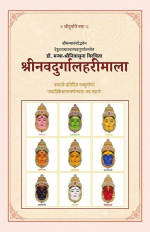

श्रीनवदुर्गालहरीमाला
Śrī Navadurgā Laharī Mālā
Google PlayLibraryŚrī Navadurgā Laharī Mālā is a garland of nine new Sanskrit hymns (laharīs) composed for Śāradīya Navarātri, when the Divine Mother is worshipped each day in a different form. Each laharī is dedicated to one of the nine Durgās — Śailaputrī, Brahmacāriṇī, Candraghaṇṭā, Kūṣmāṇḍā, Skandamātā, Kātyāyanī, Kālarātri, Mahāgaurī and Siddhidātrī — and is meant to be recited on her day.
Every laharī has twenty-one verses and a phalaśruti. Following the classical pādādi-keśānta method, each describes the Goddess from her lotus feet up to her crown of hair, bringing out the weapons, mount, complexion, glance and inner meaning special to that form, so that every day of the festival offers something new rather than repetition.
The hymns are written in the rhythmic metre of the famous Mahiṣāsuramardinī Stotra (“Ayi Girinandini”), so they can be sung to the same familiar tune. Each verse closes with its own “Jaya jaya he” refrain addressed to the Goddess of the day.
The book also contains the Navadurgā dhyāna verses for each form, a new Śrī Navadurgā Aṣṭottara-Sahasranāma Stotram (1,008 names: 112 names for each of the nine Durgās, in 252 anuṣṭubh verses) with its phalaśruti, and the traditional Kṣamā-prārthanā.
Ideal for daily Navarātri pārāyaṇa, temple and home worship, bhajan groups, and lovers of Sanskrit devotional poetry. The text is in Sanskrit (Devanagari script).
Inside this book:
• Maṅgalācaraṇam and Introduction (Prāstāvikam, in Sanskrit)
• Navadurgā Dhyānam — meditation verses for the nine forms
• Nine Laharīs, one for each day of Navarātri (21 verses + phalaśruti each)
• Śrī Navadurgā Aṣṭottara-Sahasranāma Stotram (1,008 names)
Kṣamā-prārthanā